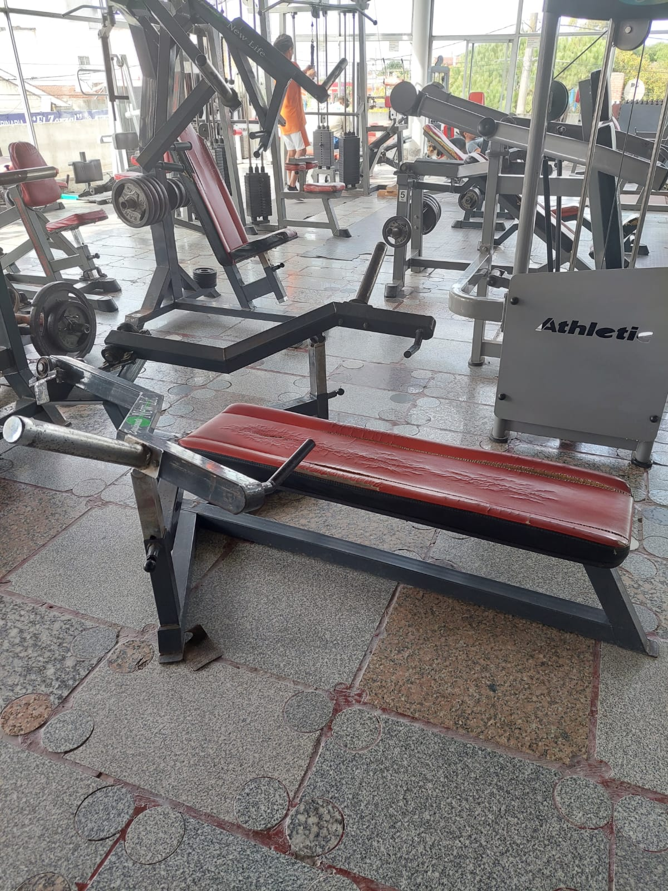
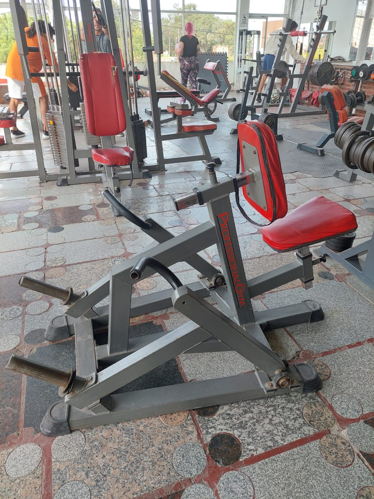
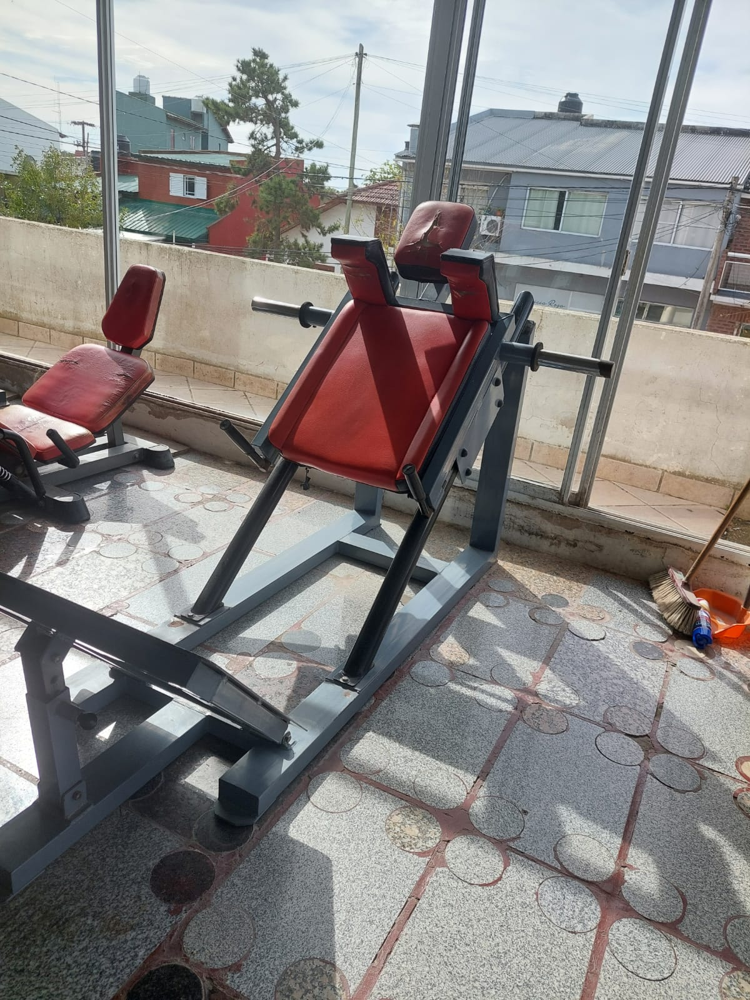
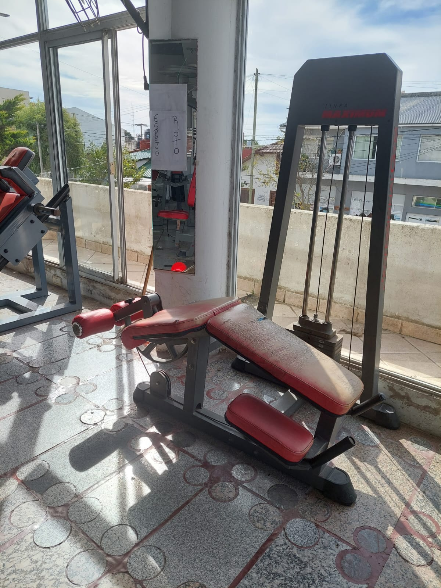
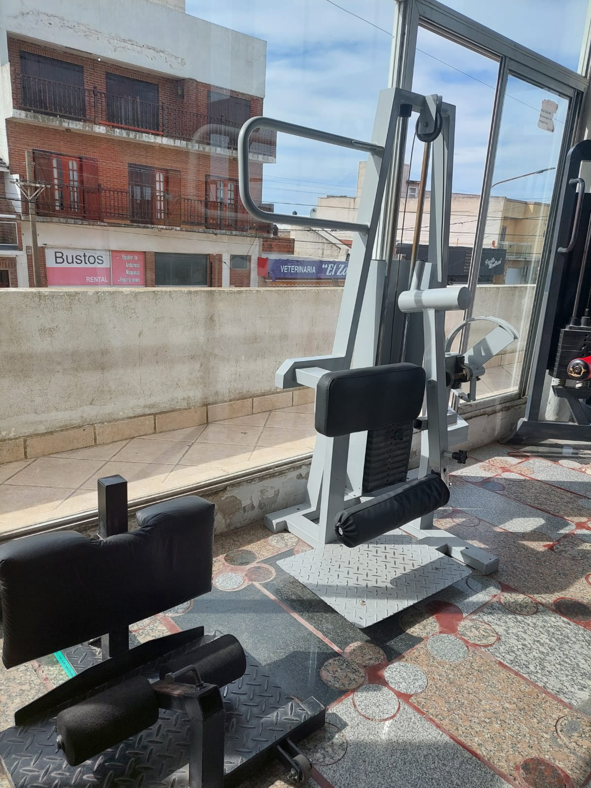
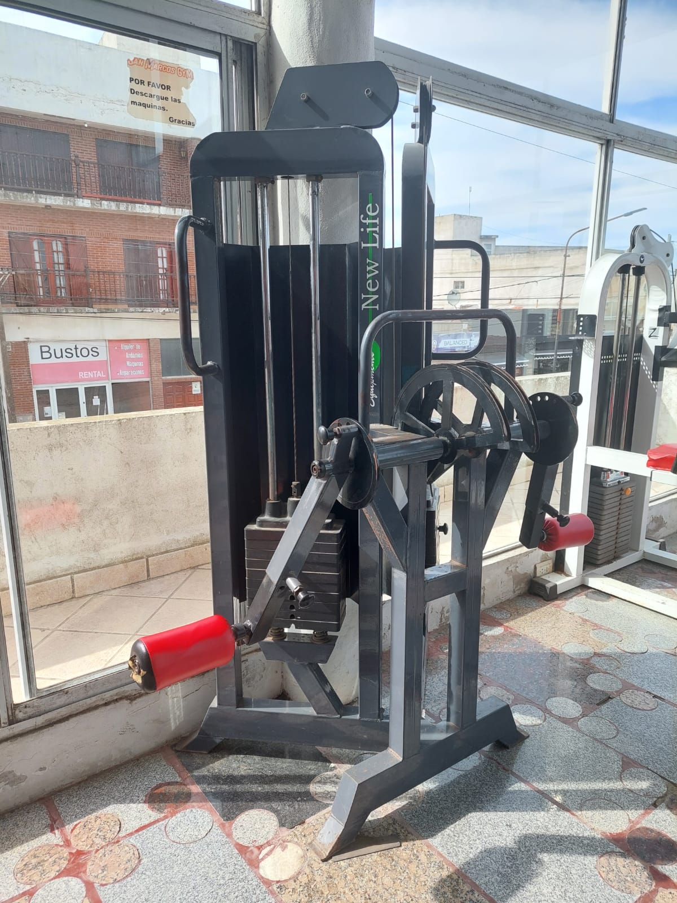
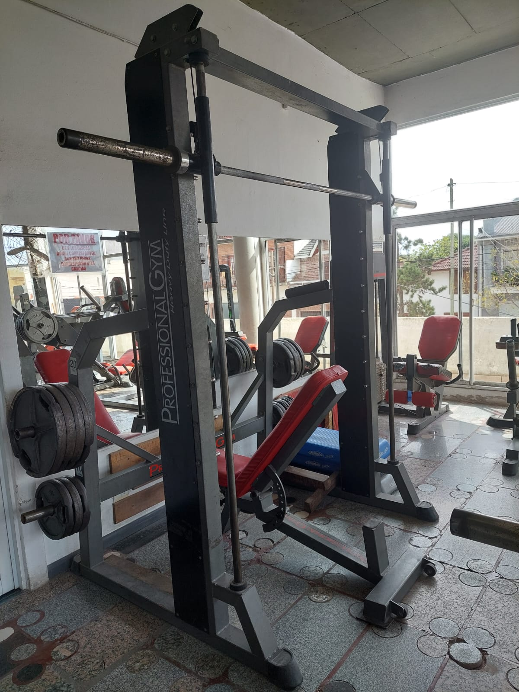
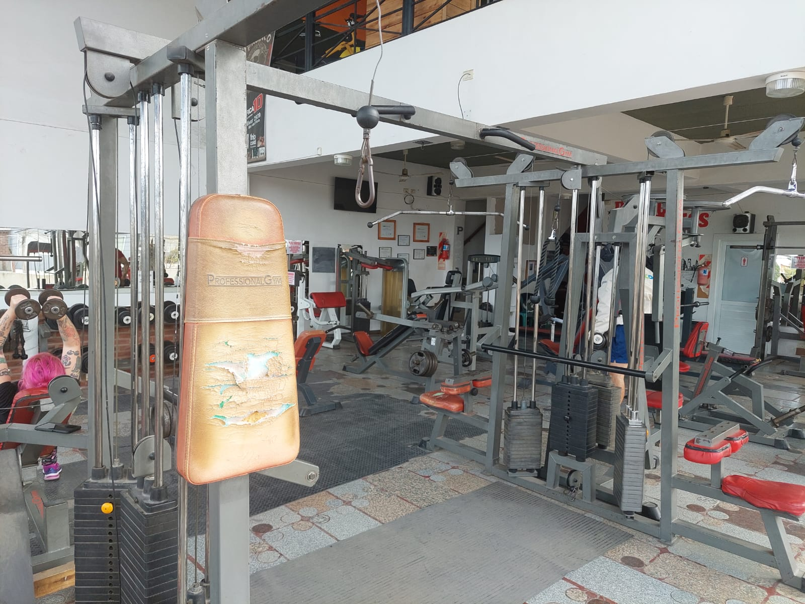
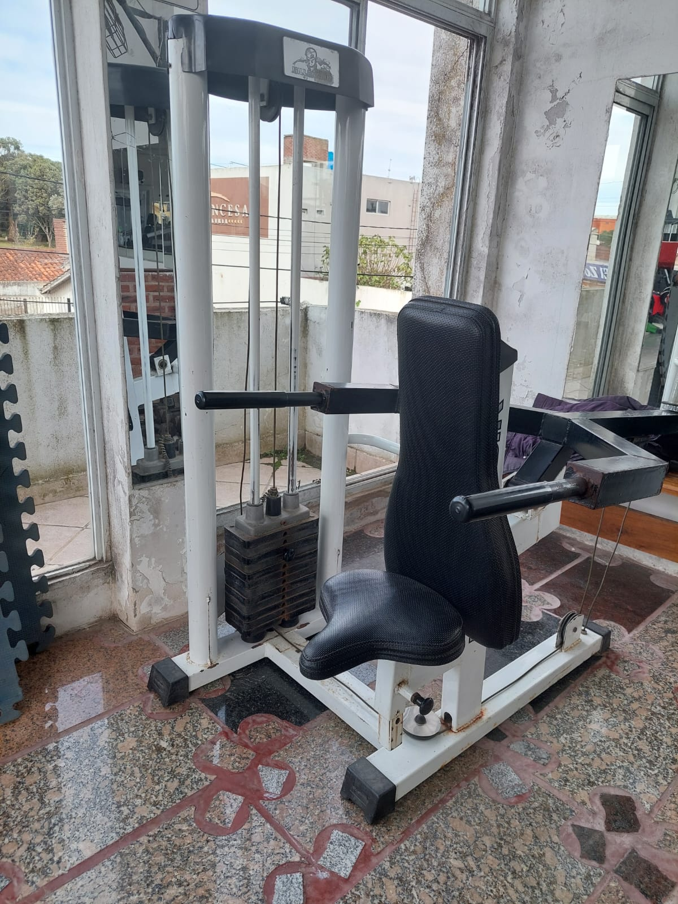

Aquí podremos realizar un press vertical. Esta maquina trabaja los músculos pectorales en la parte delantera del tórax. Fortalecer estos músculos puede ayudarte a aumentar tu capacidad de levantar y empujar.
El press de banca activa los músculos del pecho, sobre todo el músculo pectoral mayor (los pectorales), un músculo de gran tamaño situado en la parte superior del pecho. Aquí podremos trabajarlo de manera unilateral.

Aca realizaremos el press inclinado, que trabaja principalmente la parte superior (cabeza clavicular, junto a la clavícula) del pectoral mayor, el músculo más grande del pecho.

La dorsalera proporciona acondicionamiento específico a la espalda y los hombros.
El remo hammer, permite ejercitar de manera efectiva la articulación del hombro y los músculos de la parte superior de la espalda y trabajar con los músculos de la espalda.

El sillón de cuadriceps y el sillón de gemelos, como sus nombres lo indican, se enfocan en trabajar el cuadriceps y los gemelos.

En el hack a 45° todo el peso se carga sobre las piernas, especialmente sobre los cuádriceps, los cuales trabajan de forma directa.

La prensa de piernas trabaja los cuádriceps en la parte delantera de los muslos, los glúteos, los músculos isquiotibiales en la parte posterior de los muslos y las pantorrillas, todo de manera integrada.
Aquí tambien estimularemos, de forma directa, el cuadriceps. Es similar al hack en 45°.
Los músculos que mayor participación tienen esta maquina son los isquiotibiales o femorales. Trabaja la porción larga y corta del bíceps crural, el semitendinoso y semimembranoso.
Las sentadillas sissy (maquina de la izquierda) es un ejercicio ideal para trabajar y reforzar las piernas, sobre todo los cuádriceps y los glúteos.

Con esta maquina estimulamos de forma concentrada el isquiotibial, estando de pie.
La máquina de abductores/aductores permite trabajar la musculatura separadora/aproximadora de la cadera, es decir, tanto la cara interna como la cara externa del muslo, en este caso estando de pie.

La maquina de patada de gluteos,trabaja principalmente la zona del gluteo medio y mayor.

En este caso sentado, la máquina de abductores/aductores permite trabajar la musculatura separadora/aproximadora de la cadera, es decir, tanto la cara interna como la cara externa del muslo, en este caso estando de pie.
La Máquina Smith, nos brinda la posibilidad de trabajar muchos músculos, ya sea, hombro, espalda, pecho o piernas. Es muy util por ser un peso guiado por un rail, requiere menor nivel coordinativo y menos fuerza para poder realizarlo

Aquí podremos realizar un press de hombros, este es un ejercicio que implica fundamentalmente los músculos del hombro, en concreto, la cabeza anterior y posterior de los deltoides, el trapecio y los serratos.

En el sillon abdominal, podremos trabajar la parte superior del abdomen.
La jaula de musculación, también conocida como jaula de potencia, jaula de fuerza o racks, es una máquina de gimnasio que tiene forma de estructura y sirve para hacer diferentes ejercicios como, por ejemplo, dominadas, Press Militar, Jalones para la espalda y ejercicios de Triceps y Biceps.
En este sillón, el movimiento se enfocará principalmente en los tríceps. Pero también puede esperar ver algunas mejoras en el área de su hombro y pecho. Esto incluye los deltoides anteriores: los músculos en la parte delantera de los hombros.

Este es el Rack de Sentadillas. Los músculos implicados durante la sentadilla son principalmente los cuádriceps y los glúteos, y los isquiotibiales en menor medida. Puesto que permite mover grandes pesos, es ideal para desarrollar la masa muscular de estos tres grupos musculares.